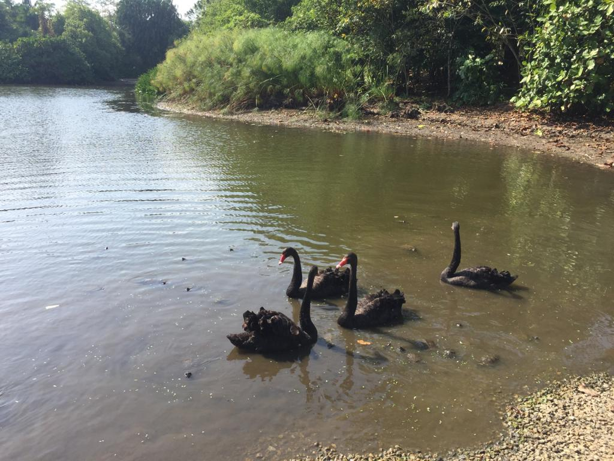

Photography & Videography
January 2015 - Now
A photograph taken during one of his photography trips
My Photography and Videography Journey
Hong Yih throughoutly enjoys taking photographs and videos, but he believes that photography and videography is so much more than just that. He believes that photography allows one to see through the lens of the photographer, and to shed light on perpectives that were never imagined possible. He believes that photography is an activity that everyone can enjoy and reflect on.